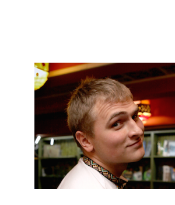

I am an outgoing and energetic professional, seeking a position as a software developer where I can use both coding and social skills. I am passionate about new technologies and software methodologies and adopt them if it is reasonable.
- Skills
-
Frameworks/Tools
- Python: Django
- JS: NodeJS, Backbone, React
- SQL: Postgres
- NoSQL: MongoDB, Redis
- messaging: ZeroMQ
- assets pipeline/automation: Fabric, Grunt
- infrastructure: nginx, Vagrant, Ansible, AWS
Higher level skills
- Understanding of backend architecture: caching, messaging, SOA, REST etc
- Understanding of frontend architecture: SPA, nonCRUD JS-application, rendering optimization
- General programming concepts: async, concurrency, functional programming
- Small team management and communication with customer/stakeholder
- Experience
-
DjangoStarsFullstack developer/Team Lead – Oct 2013 - present time
- customers requirements recognition
- designing the overall architecture of the application(complicated business logic, custom DSL, nonCRUD interface)
- developing both the REST API and the SPA
- Managing small team
- Stack: Django, Backbone/React, Fabric, Ansible, Vagrant, Redis
DjangoStarsBackend developer – Feb 2013 - Oct 2013
- Develops social web-oriented application
- Improved development testing methodology. Increase coverage for more than 40 percent and replaced Django native test framework with WebTest
- Propose some changes to project business logic which helps to decrease complexity of source code and improve user experience
- Stack: Django, Angular, Fabric, Python, Redis
Terrasoft .Net developer – Aug 2012 - Jan 2013
- Configuration and developing new functionality on BPMonline Platform for big communication company
The whole list is available on requests
- Conferences
-
I believe in software methodologies and trying to increase adoption of them in our development community. For this reason I am organizing IT-conferences
- Speaker
-
I like TDD and developed a kind of practical directions for company which wants to adopt this methodology. I presented this idea on pyconua and pyconby. The best play of the talk is here(in Russian). Slides in English. Keyideas: Django, Webtest, Factory_boy, test_X/dont_test_Y
- Links
-
- Education
-
National Technical University of Ukraine "Kiev Polytechnic Institute"
Major: System Engineering
Minor: Software Engineering
- Certificates
-
Coursera – Programming Languages
Keyconcepts: functional programming, pure functions